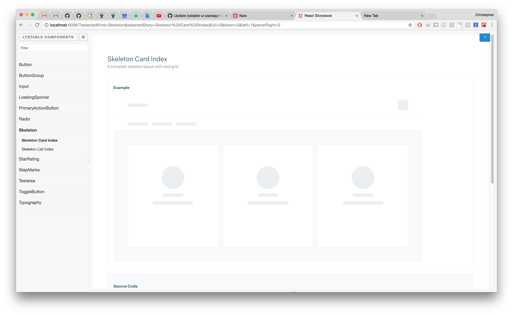
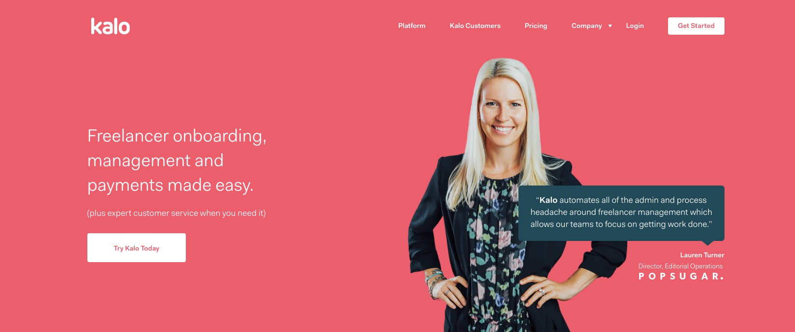

5. Man down
This is a sprintly summary of upcoming, delivered and in-progress work for the Infra DX Crew.
It’ll contain technical musings,and probably a few memes. TLDR
- Kicked off lots of things: data loading, pagination UX, and performance.
- Code splitting (mostly) there 🎉
- Refined frontend cohort process
- Category update improvements
- A (slightly) new landing page
Intro
After a pretty intense rebrand focused sprint, things are mostly back to normal. Although for the past and upcoming sprints, the crew has mostly been one man down:
- Yannis was away for most of the previous sprint
- Chris is away for most of the upcoming sprint
What we worked on
Where has our focus been?
Data loading UX
Chris kicked off discussions with the product team around data loading and the best UX practices surrounding this.
He’s also done some cool work on building out some skeleton components, that can be used to reduce the perceived load time that a user experiences.

Code splitting
Chris has powered on with the performance theme, looking at how our frontend bundles can be split up to only load code when it’s required.
Refined f/e cohort process
As part of the ongoing push to document all the things, Chris has put together some documentation on the processes of the Frontend Cohort, which you can check out here!
New landing page header
We’ve shipped the new header of our landing page, designed by Pete and featuring one of our customers.

Slow category updates
Slow category update improvements have been reviewed and are ready, but we’ll be preceding them with a couple days of monitoring to get a fact-based measurement for how much better we’ve made it for the user, as well as to be better aware of Elasticsearch indexing issues in the future.
What’s up next?
Marketing site updates
I (Alex) will continue on migrating pages from the old marketing site in to our shiny new repo. We’re about 75% of the way to having one repo, and on track to migrate everything by the end of the quarter.
PasS (Platform as a Service)
Yannis will start working on getting the Nameko workers deploying in the new way, and this infra should be deployed on staging, without the changes yet being reflected in the LWS repo, so we can ensure stability. Check out this ticket for more context.
Also PaaS related, Yannis has started on integrating it with Consul to achieve service discovery, which will result in DNS-based service discovery and alerting as a result, out of the box 🎁.
Category update improvements
Yannis will be releasing the updates to address the slow category updates (see above) this sprint.
Release Watch
This is a recurring section retrospecting any releases which didn’t seem to go as smoothly as we would’ve liked.
Backend
- Total number of releases: 4
- Average release time: 120 minutes
- Maximum release time: 180 minutes
Frontend
- Total number of releases: 1
- Average release time: 180 minutes
- Maximum release time: 180 minutes
See ya!
✌️ AP